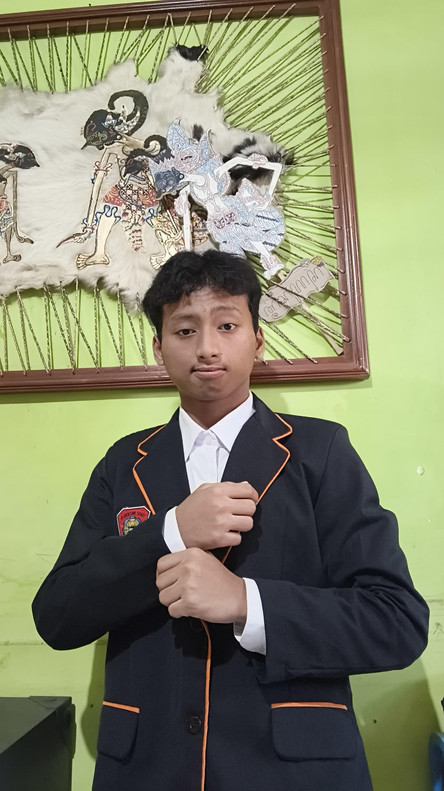

Biodata
Nama Lengkap
Moch Raihan Fadillah
Agama
Islam
Tempat, Tanggal Lahir
Malang, 10 Maret 2010
Umur
16 Tahun
Alamat
Jl. L.A Sucipto 365
Hobi
Ngoding · Desain · Dengerin Musik
Sekolah
SMK Negeri 8 Malang
Cita-cita
Programmer
Fotoku

Audioku
Browser Anda tidak mendukung pemutar audio.
Videoku
Browser Anda tidak mendukung pemutar video.
Instagram
@xzeelarcadia.id